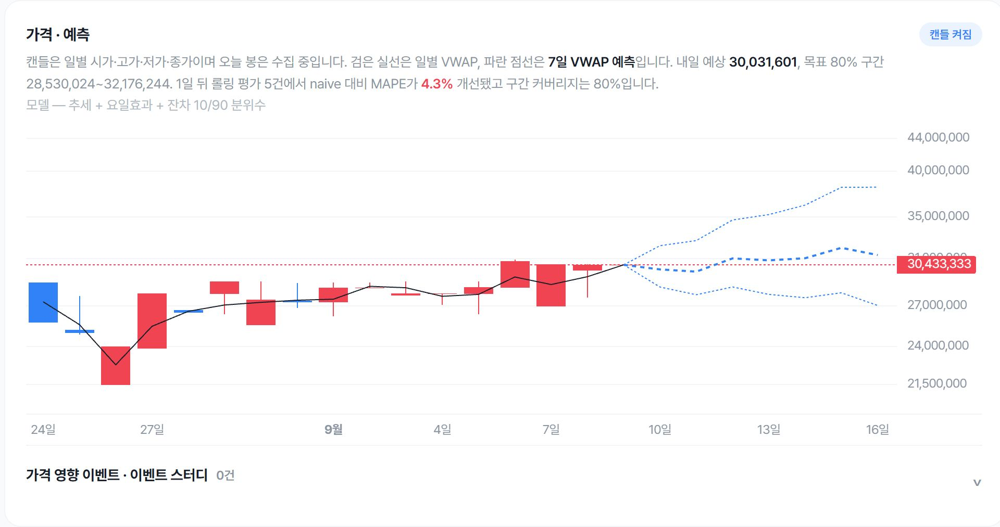

DNF 경매장 트렌드 분석
Neople Open API · SQL 저장 · 가격 변동 검정 · 시계열 예측 평가
2026.09.09 16:05 KST 공개 집계를 고정한 기록입니다. 체결 기록 범위는 2026.08.08~09.09이며, 수집 시작 시 조회한 과거 기록을 포함합니다. 품목별 관측 기간은 다르고, 연결된 분석 페이지는 매시간 갱신됩니다. 기준 시점 집계 확인

체결 API는 최근 100건 또는 최대 한 달 중 먼저 도달하는 한도까지만 제공합니다. 더 긴 시세 이력과 이벤트 전후 자료를 확보하려면 데이터를 직접 쌓아야 했습니다.
API 수집·SQL 저장·시간봉 집계·웹 차트를 구현했습니다. 원본 체결과 시간봉을 대조하고, 집계 불일치나 지연이 발견되면 새 배포를 중단하도록 검증 절차를 구축했습니다.
빈 시간봉을 채우거나 공백 양쪽을 이어 붙이지 않고, 종목별 가장 긴 연속 완료 구간을 검정했습니다. 일반 아이템의 대표 가격은 최근 60분 VWAP, 카드는 단계별 최저 호가로 구분했습니다. 매물 감소에는 취소가 섞여 체결량과 합산하지 않았습니다.
검정 가능한 15종 중 1종에서 Holm 다중 검정 보정 후 단기 반전 신호를 관측했습니다. 평가일 기준 1일 뒤 예측은 4종·15건에서 MAPE 2.32%로, 마지막 완료 일봉의 VWAP을 유지하는 기준선(1.97%)보다 오차가 컸습니다. 요일 효과는 표본 부족으로 판단을 보류했습니다.
예측은 평가일 이전 자료로 다시 학습하는 롤링 방식으로 점검했습니다. 백필을 포함한 체결 시각 기준의 과거 재구성이며, 당시 수집기가 보유했던 자료까지 재현한 평가는 아닙니다. 15건은 독립 표본 수를 뜻하지 않으며, 7일 뒤 예측은 아직 평가 가능한 사례가 없습니다.
품목별 거래 조건과 데이터 품질을 함께 확인할 수 있는 분석 기반을 만들었습니다. 관측된 신호를 장기 추세나 원인으로 단정하지 않고, 추가 데이터가 필요한 질문을 구분했습니다.